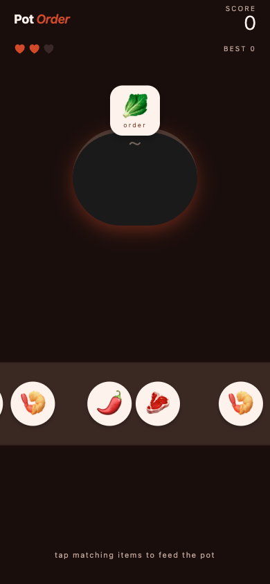
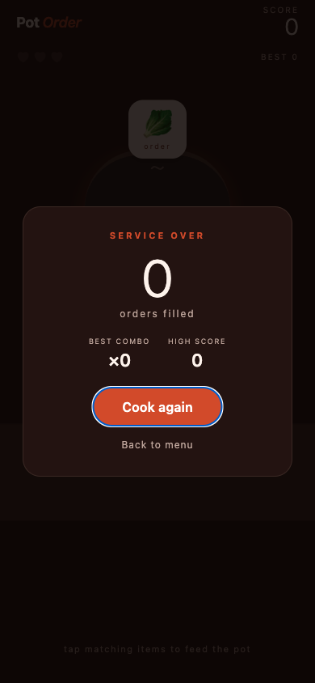

One-thumb reflex
Tap-only. No swipe, no drag, no menus mid-game. The whole loop is order → see → tap.
Now in beta · iOS via Expo Go
A one-thumb cooking puzzle for iPhone. The pot calls out an ingredient — tap the matching item on the belt before it slides off. No ads, no IAP, no banners.
Offline-firstNo adsNo IAPOpen source
Features
The whole feature set, plainly listed — no upsells gating the basics.
Tap-only. No swipe, no drag, no menus mid-game. The whole loop is order → see → tap.
Consecutive correct matches build a combo. Every five matches in a row bumps the point value of each subsequent match.
Hit a combo of eight and Fever activates — every match doubles for six seconds. The pot glows accent-color while it's live.
The conveyor's travel time shortens as your score grows. Spawn rate tightens too. The early game gives you room; the late game doesn't.
Three misses end the round. The wrong-tap bounce and the slide-off-the-edge both count.
Best score lives on this device. No leaderboard server, no account, no telemetry, no IAP.
How to play
A few short steps. The app gets out of your way after that.
The menu sums up the rules in three lines. Tap Start cooking to enter the round.
The pot at the top wears a speech bubble with the next ingredient. Order changes each match.
Belt items ride from right to left. Tap the one that matches the order before it falls off the edge.
Five consecutive correct matches starts the multiplier; eight triggers Fever (2× scoring for six seconds).
Wrong tap or a matching item that slid off both count. Three misses ends the round.
Screenshots
Captured from the running app at iPhone 14 viewport.

